Deep Learning for
Earth Observation
Course map — 180 minutes
| Time | Part | Theory | Practice (EO) |
|---|---|---|---|
| 0:00 | Opening | Goals, roadmap | — |
| 0:05 | I · History of AI | Turing's learning machine, AI winters, classical ML, chips | Random forest on Sentinel-2 |
| 0:25 | II · Learning maths | Loss, gradient descent, backprop, likelihood | Gradient-descent demo |
| 0:35 | III · Perceptron & MLP | McCulloch–Pitts, Rosenblatt, XOR, universal approximation | Lab 1 · pixel classification |
| 0:55 | IV · CNNs | Convolution, ResNet, U-Net | Labs 2–3 · EuroSAT, LandCover.ai |
| 1:20 | Break · استراحة · 10 min | ||
| 1:30 | V–VI · RNN/LSTM & GANs | BPTT, gates, minimax game, pix2pix | Labs 4–5 · ETo forecast, SAR→optical |
| 1:55 | VII · Transformers | Attention, ViT, MAE | Lab 6 · ViT on EuroSAT |
| 2:10 | VIII–IX · Geo foundation models | SSL, GeoFM generations, Earth-FM features | Labs 7–9 · Prithvi, AlphaEarth, informal settlements |
| 2:40 | X · LLMs & agentic AI | Scaling, RAG, agents, LangGraph | Labs 10–11 · EO RAG & agent |
By the end of this course you will be able to…
Explain
how each family — MLP, CNN, RNN/LSTM, GAN, Transformer, foundation model, LLM agent — represents data and learns, with the key equation of each.
Choose
the right architecture for an EO problem: pixels, scenes, segmentation, time series, image translation, multimodal cubes, documents or workflows.
Build
working PyTorch, TerraTorch, Earth Engine, LangChain and LangGraph pipelines — and map informal settlements with foundation models.
Four nested ideas, one arch
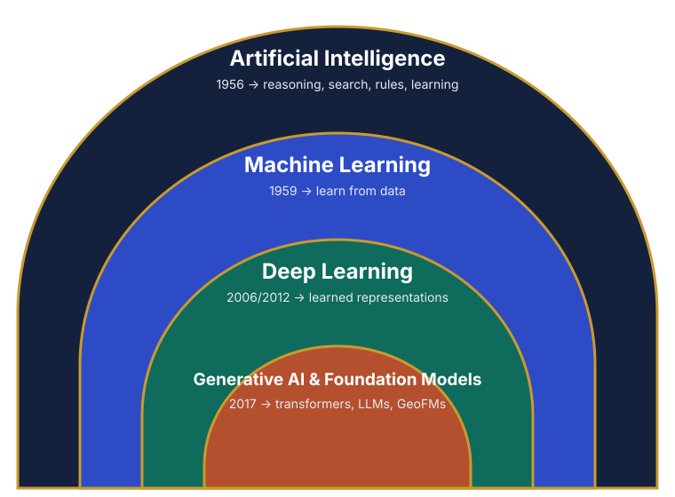
- Artificial intelligence — any technique that makes machines act intelligently: search, logic, rules and learning.
- Machine learning — performance at a task improves with experience (data) instead of explicit programming.
- Deep learning — ML with many stacked, differentiable layers that learn their own features from raw signals (pixels, spectra, time series, text).
- Generative AI & foundation models — very large models, usually Transformers, pre-trained on broad data and adapted to many tasks.
From Turing to tensor cores
- Turing's learning machine and the theory behind it
- Symbolic AI, two winters, and the classical-ML era
- Why deep learning took off: data, algorithms — and chips
Eighty years in one line
Alan Turing's learning machine (1950)
In §7 of Computing Machinery and Intelligence Turing argues that programming an adult mind by hand is hopeless. Instead, build a child machine — little mechanism, many “blank sheets” — and educate it.
| Turing's idea | Modern counterpart |
|---|---|
| Child machine + education | Model with random init + training on data |
| Rewards & punishments | Reinforcement learning, RLHF for LLMs |
| Changing “rules” during learning | Updating parameters θ |
| Random element in the machine | Stochastic gradient descent, dropout |
| Hereditary material · mutation · selection | Architecture search, evolutionary methods |
| Teacher ignorant of inner workings | The interpretability problem |
Unorganised machines (1948)
Turing's NPL report described networks of randomly connected two-input “neurons” whose connections can be switched on or off by training — a neural network a decade before the perceptron.
Rules first, then two winters
1956–1974
Symbolic optimism
Logic, search and hand-written rules (Logic Theorist, GPS). Perceptrons learned simple patterns. Claims ran far ahead of results.
1974–1980 · winter I
Reality check
Combinatorial explosion, tiny computers, the XOR critique of single-layer perceptrons and the UK Lighthill report cut funding.
1980–1987
Expert systems
Knowledge engineered as IF–THEN rules (MYCIN, XCON). Worked in narrow domains, but brittle and costly to maintain.
1987–1993 · winter II
Lisp-machine market collapses; rule bases do not scale. Meanwhile back-prop (1986) quietly revives neural networks.
Lesson for EO
Decision-tree land-cover rules and spectral thresholds (e.g. NDWI > 0 = water) are symbolic AI. They work locally and break across sensors, seasons and regions.
The classical-ML era: you design the features
- SVM — maximise the margin; kernels give non-linear boundaries.
- Random forest — bagged decision trees; robust, fast, gives feature importance. Still the workhorse of land-cover mapping in Earth Engine.
- Gradient boosting — trees fitted to residuals; strong on tabular EO features.
import numpy as np from sklearn.ensemble import RandomForestClassifier from sklearn.model_selection import GroupKFold, cross_val_score # X_bands: (n_pixels, 10) Sentinel-2 L2A reflectances # y: land-cover label, groups: id of the polygon each pixel came from def indices(X): B2, B3, B4, B8, B11 = X[:, 0], X[:, 1], X[:, 2], X[:, 6], X[:, 8] ndvi = (B8 - B4) / (B8 + B4 + 1e-6) ndwi = (B3 - B8) / (B3 + B8 + 1e-6) ndbi = (B11 - B8) / (B11 + B8 + 1e-6) # built-up return np.c_[X, ndvi, ndwi, ndbi] F = indices(X_bands) rf = RandomForestClassifier(n_estimators=300, n_jobs=-1, class_weight="balanced") # group-wise CV: pixels of one polygon never in train AND test scores = cross_val_score(rf, F, y, groups=groups, cv=GroupKFold(5), scoring="f1_macro") print(f"macro-F1 = {scores.mean():.3f} ± {scores.std():.3f}")
The shift: from feature engineering to representation learning
Classical pipeline
Knowledge lives in the features. New sensor or region ⇒ redesign.
Deep pipeline
Knowledge lives in the weights, learned end-to-end by gradient descent.
Why now? Data × algorithms × compute
Data
- ImageNet (2009): 14 M labelled images
- Landsat archive opened free in 2008
- Copernicus Sentinels: free & open, petabytes per year
- Labels from crowdsourcing & OpenStreetMap
Algorithms
- ReLU: gradients that do not vanish
- Dropout, batch-norm, Adam
- Residual connections (ResNet): 100+ layers
- Self-supervised pre-training
Compute
- GPUs: thousands of cores for matrix maths
- CUDA (2007) made them programmable
- TPUs & tensor cores (2016–17)
- Cloud platforms: Earth Engine, Planetary Computer
Deep learning is matrix multiplication — chips made it cheap
| Chip | Design | Good at |
|---|---|---|
| CPU | Few powerful cores, big caches | Branchy, sequential code |
| GPU | Thousands of simple cores, SIMT | Parallel multiply–add on tensors |
| Tensor core | Matrix-multiply unit inside a GPU | Mixed precision (FP16/BF16/FP8) |
| TPU | Systolic array (Google, 2015–16) | Dense matmul at scale |
Training compute grew ~10 orders of magnitude
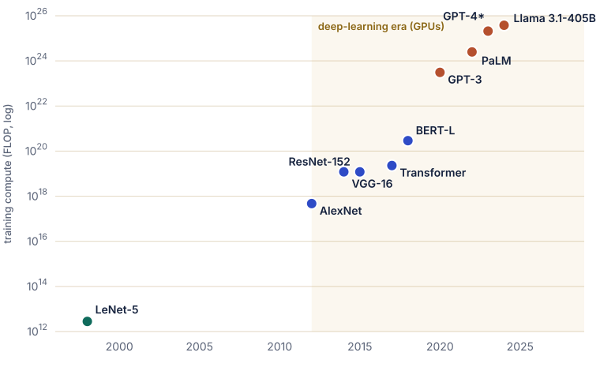
- Before 2010 compute followed Moore's law (doubling ≈ every 2 years).
- In the deep-learning era it doubled roughly every ~6 months (Sevilla et al., 2022).
- Scaling laws: loss falls as a power law of parameters, data and compute — the bet behind LLMs and Earth foundation models.
- Cost now matters: carbon-aware training is one of the “ideal Earth FM” features (Part VIII).
Learning is optimisation
- EO data as tensors — the data cube
- Loss functions and gradient descent (live demo)
- The chain rule, back-propagation and likelihood
Everything is a tensor: the EO data cube
| Model input | Shape | Example |
|---|---|---|
| Pixel spectrum | C | 13 Sentinel-2 bands |
| Image patch | C×H×W | EuroSAT 13×64×64 |
| Pixel time series | T×C | daily ERA5 weather, 365×6 |
| Image time series | T×C×H×W | Prithvi: 4×6×224×224 |
Training = minimising a loss
| Task | Loss ℓ | EO example |
|---|---|---|
| Regression | MSE (y^−y)2, MAE | ETo, biomass, soil moisture |
| Classification | Cross-entropy −logpy | Land cover, crop type |
| Segmentation | CE + Dice / focal | Buildings, floods, slums |
| Generation | Adversarial, L1, diffusion | SAR→optical, cloud removal |
Generalisation, not memorisation
We minimise the loss on training data but care about unseen places and dates. Regularisers Ω (weight decay), dropout, augmentation and early stopping fight over-fitting.
EO trap · spatial autocorrelation
Neighbouring pixels are near-duplicates. Random train/test splits leak information and inflate accuracy. Split by blocks, polygons, tiles or cities (spatial cross-validation).
Gradient descent — walk downhill
- Learning rate η: too small = slow, too big = divergence or oscillation. Try it →
- Stochastic GD: estimate ∇L on a mini-batch of 32–512 patches; noise helps escape poor minima.
- Momentum / Adam: average past gradients and rescale per parameter — the default optimisers today (AdamW for Transformers).
- Non-convex loss: start point and η decide which valley you land in.
Back-propagation = the chain rule, applied backwards
- Forward pass computes and caches every intermediate value.
- Backward pass multiplies local derivatives from the loss back to each weight — one sweep gives all gradients at ≈ the cost of one forward pass.
- PyTorch/JAX do this automatically (autograd): you write the forward pass,
loss.backward()does the rest. - Products of many small factors (σ′ ≤ 0.25) ⇒ vanishing gradients in deep or recurrent nets — the motivation for ReLU, ResNets and LSTMs.
Why cross-entropy? Maximum likelihood
Worked example · one EuroSAT patch
| Class | Logit z | p |
|---|---|---|
| Residential | 2.1 | 0.71 |
| Industrial | 1.0 | 0.24 |
| Pasture | −1.0 | 0.03 |
| River | −1.5 | 0.02 |
True label Residential ⇒ loss = −log 0.71 = 0.34. Had it been River ⇒ −log 0.02 = 3.9: confident mistakes are punished hard.
The first neurons
- McCulloch–Pitts (1943) and Rosenblatt's perceptron (1958)
- Playground: train a perceptron on Red/NIR reflectance
- Multi-layer perceptrons, activations, training recipe
- Lab 1 — pixel classification of Sentinel-2 spectra
From the logical neuron to the perceptron
Convergence theorem (Novikoff, 1962)
If the classes are linearly separable with margin γ and ∥x∥≤R, the perceptron makes at most (R/γ)2 mistakes — then stops. If they are not separable, it never settles.
Rosenblatt's Mark I Perceptron was hardware: a 20×20 photocell “retina”, potentiometer weights driven by motors.
Playground: water vs vegetation from Red & NIR
Separable case
Water absorbs NIR; vegetation reflects it strongly. A single line in (Red, NIR) space separates them — the perceptron finds it in a few epochs. The line it learns is a cousin of NDVI.
XOR: the 1969 critique
Load XOR: no straight line works, the error never reaches 0. Minsky & Papert proved single-layer limits; funding dried up for a decade.
Multi-layer perceptron: stack, bend, repeat
- Each layer = linear map (rotate/stretch) + non-linear bend φ. Without φ the whole net collapses to one linear map.
- Hidden layers solve XOR: they re-represent the input so classes become linearly separable at the last layer.
- Universal approximation (Cybenko 1989; Hornik 1991): one wide hidden layer can approximate any continuous function on a compact set — but depth makes it far more efficient.
- Parameters: 13→128→64→10 has 13·128+128 + 128·64+64 + 64·10+10 = 10 698 weights.
Activation functions: where the non-linearity lives
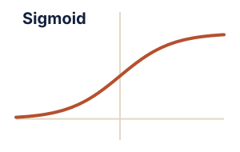
σ(z)=1+e−z1 — probabilities, gates in LSTMs. Saturates ⇒ vanishing gradients.
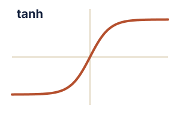
tanhz — zero-centred, used in RNN/LSTM states. Also saturates.
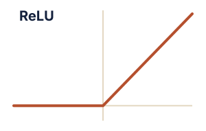
max(0,z) — cheap, gradient 1 when active. Default for CNNs since AlexNet.
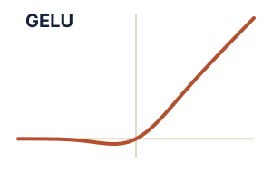
zΦ(z) — smooth ReLU used in Transformers (BERT, ViT, Prithvi).
A training recipe that works in EO
1 · Data
- Normalise per band (mean/std of the training set)
- Spatially blocked train / val / test
- Augment: flips, 90° rotations, (careful) brightness
- Handle imbalance: class weights, focal loss
2 · Optimisation
- AdamW, lr 1e-3 (scratch) or 1e-4 (fine-tune)
- Mini-batches 32–256; cosine or one-cycle schedule
- Mixed precision on GPU
- Early stopping on validation loss
3 · Regularisation
- Weight decay λ∥θ∥2
- Dropout (p = 0.1–0.5)
- Batch / layer normalisation
- Pre-trained weights (transfer)
Diagnose
Train ↓ val ↑ ⇒ over-fitting · both high ⇒ under-fitting / bad lr · val ≫ test on a new region ⇒ domain shift.
Report
Per-class F1, IoU, confusion matrix, and the map — numbers alone hide spatial errors.
Lab 1a · A perceptron in 20 lines of NumPy
import numpy as np class Perceptron: """Rosenblatt (1958) with labels in {-1, +1}.""" def __init__(self, n_features, lr=0.01): self.w = np.zeros(n_features); self.b = 0.0; self.lr = lr def predict(self, X): return np.where(X @ self.w + self.b >= 0, 1, -1) def fit(self, X, y, epochs=100): self.errors_ = [] for _ in range(epochs): errors = 0 for xi, yi in zip(X, y): if yi * (xi @ self.w + self.b) <= 0: # mistake self.w += self.lr * yi * xi # update rule self.b += self.lr * yi errors += 1 self.errors_.append(errors) if errors == 0: # converged break return self
from torchgeo.datasets import EuroSAT ds = EuroSAT("data", split="train", bands=("B04", "B08"), download=True) veg, water = {"Forest", "Pasture"}, {"River", "SeaLake"} X, y = [], [] for s in ds: name = ds.classes[int(s["label"])] if name in veg | water: X.append(s["image"].mean(dim=(1, 2)).numpy() / 1e4) y.append(1 if name in veg else -1) X, y = np.array(X), np.array(y) p = Perceptron(2, lr=0.05).fit(X, y) print("train acc:", (p.predict(X) == y).mean())
Lab 1b · MLP on 13-band spectra → 10 land-cover classes
import torch, torch.nn as nn model = nn.Sequential( nn.Linear(13, 128), nn.ReLU(), nn.Dropout(0.2), nn.Linear(128, 64), nn.ReLU(), nn.Linear(64, 10)) # logits for 10 classes opt = torch.optim.AdamW(model.parameters(), lr=1e-3, weight_decay=1e-4) loss_fn = nn.CrossEntropyLoss() for epoch in range(40): model.train() for xb, yb in train_dl: # xb: (B, 13) z-scored opt.zero_grad() loss = loss_fn(model(xb), yb) # forward loss.backward() # back-prop opt.step() # gradient step val_acc = evaluate(model, val_dl) print(f"{epoch:02d} loss {loss.item():.3f} val {val_acc:.3f}")
What to observe
- Band-mean spectra alone reach a good but limited accuracy: Highway, Industrial and Residential get confused — they differ by spatial pattern, not spectrum.
- Confusion matrix shows which classes need context.
Exercise
Add NDVI/NDBI as extra inputs. Does the MLP still need them? Compare with the random forest from Part I.
Seeing space: CNNs
- Convolution: locality, weight sharing, equivariance (live demo)
- From LeNet to ResNet and U-Net
- EO tasks: scenes, segmentation, detection, change
- Labs 2–3 — EuroSAT transfer learning, U-Net on LandCover.ai
Three priors that make images learnable
Locality
A pixel is explained by its neighbours: a roof edge, a field boundary, a river bank. Each neuron looks at a small window (3×3).
Weight sharing
The same filter slides over the whole image. A “bright-line detector” is useful everywhere — so learn it once.
Equivariance
Shift the input, the feature map shifts the same way. A building is a building in any corner of the tile.
Convolution in action — filters are feature detectors
Kernel
e.g. 64-px tile, K = 3, P = 1, S = 2 ⇒ 32 px.
Building blocks and the feature hierarchy
Receptive field
Each layer widens what a neuron “sees”. Two 3×3 convs see 5×5; with down-sampling a deep neuron covers hundreds of metres on Sentinel-2.
Pooling
Max/average pooling summarise a window: robustness to small shifts, cheaper compute. Global average pooling feeds the classifier.
Normalisation
Batch-norm stabilises training; with multispectral data, normalise inputs per band with dataset statistics.
A short family tree of CNN architectures
| Year | Model | Key idea |
|---|---|---|
| 1998 | LeNet-5 | Conv + pooling + FC, trained end-to-end |
| 2012 | AlexNet | ReLU, dropout, GPUs, data augmentation |
| 2014 | VGG / GoogLeNet | Deep stacks of 3×3; multi-branch Inception |
| 2015 | ResNet | Residual connections: 50–152 layers train fine |
| 2015 | U-Net | Encoder–decoder + skip connections for pixel masks |
| 2017–19 | DenseNet, EfficientNet | Feature reuse; compound scaling of width/depth/res |
| 2022 | ConvNeXt | CNN modernised with Transformer-era design |
Why ResNet matters
∂y/∂x=∂F/∂x+I: the “+I” keeps gradients alive through very deep nets — the same trick lives inside every Transformer block.
What CNNs do in Earth observation
| Task | Output | Typical model | Benchmark data |
|---|---|---|---|
| Scene classification | one label per tile | ResNet, EfficientNet | EuroSAT, BigEarthNet |
| Semantic segmentation | label per pixel | U-Net, DeepLabv3+ | LandCover.ai, Sen1Floods11 |
| Object detection | boxes (rotated) | Faster R-CNN, YOLO | DOTA, xView |
| Building footprints | instance masks | Mask R-CNN, U-Net | SpaceNet |
| Change detection | change mask | Siamese U-Net | OSCD, LEVIR-CD |
| Super-resolution / regression | image or value per pixel | SRCNN, ResNet regressors | Sentinel-2 ↔ VHR pairs |
Lab 2 · Transfer learning: ImageNet ResNet → EuroSAT
import torch, torch.nn as nn from torchvision import datasets, transforms, models tf = transforms.Compose([ transforms.Resize(224), transforms.RandomHorizontalFlip(), transforms.RandomVerticalFlip(), transforms.ToTensor(), transforms.Normalize([0.485, 0.456, 0.406], [0.229, 0.224, 0.225])]) ds = datasets.EuroSAT("data", transform=tf, download=True) train_ds, val_ds = torch.utils.data.random_split( ds, [0.8, 0.2], generator=torch.Generator().manual_seed(42)) model = models.resnet18(weights=models.ResNet18_Weights.DEFAULT) model.fc = nn.Linear(model.fc.in_features, 10) # new head # stage 1: freeze backbone, train the head (fast) for n, p in model.named_parameters(): p.requires_grad = n.startswith("fc") opt = torch.optim.AdamW(filter(lambda p: p.requires_grad, model.parameters()), lr=1e-3) # stage 2: unfreeze all, lr=1e-4, a few more epochs
Why it works
Early ImageNet filters (edges, textures) are generic. Only the head is task-specific. With 27 000 EuroSAT patches, fine-tuning typically reaches high-90s % accuracy — far above the spectral MLP.
Going multispectral
Swap the first conv to 13 inputs, or load Sentinel-2 self-supervised weights:
from torchgeo.models import ResNet18_Weights, resnet18 m = resnet18(ResNet18_Weights.SENTINEL2_ALL_MOCO) # 13 bands
Lab 3 · U-Net semantic segmentation
- Encoder (often a pre-trained ResNet) captures what; decoder recovers where.
- Skips pass fine edges to the decoder ⇒ crisp field and building boundaries.
- Loss: cross-entropy + Dice for rare classes; metric: IoU = TP / (TP + FP + FN).
import torch, torch.nn as nn import segmentation_models_pytorch as smp from torchgeo.datasets import LandCoverAI from torch.utils.data import DataLoader train = LandCoverAI("data", split="train", download=True) dl = DataLoader(train, batch_size=8, shuffle=True) # 5 classes: background, building, woodland, water, road model = smp.Unet("resnet34", encoder_weights="imagenet", in_channels=3, classes=5) ce, dice = nn.CrossEntropyLoss(), smp.losses.DiceLoss("multiclass") opt = torch.optim.AdamW(model.parameters(), lr=3e-4) for batch in dl: x = batch["image"].float() / 255.0 # (B,3,512,512) y = batch["mask"].long() # (B,512,512) logits = model(x) # (B,5,512,512) loss = ce(logits, y) + dice(logits, y) opt.zero_grad(); loss.backward(); opt.step() tp, fp, fn, tn = smp.metrics.get_stats(logits.argmax(1), y, mode="multiclass", num_classes=5) print("mIoU", smp.metrics.iou_score(tp, fp, fn, tn, reduction="macro"))
Break · mint tea
- Open notebooks/ and launch Lab 2 in Colab (GPU runtime)
- Question to ponder: which axis of the data cube have we not used yet?
- Next: time (RNN/LSTM), then generation (GANs)
Learning time: RNN & LSTM
- Recurrence, back-propagation through time, vanishing gradients
- LSTM gates — a memory cell you can train
- EO time series: phenology, crops, hydrology, ETo
- Lab 4 — forecasting reference evapotranspiration
Recurrent networks: a loop with memory
- A state ht summarises the past: an NDVI trajectory, a week of weather.
- BPTT: unroll in time and back-propagate through all steps.
LSTM: a gated memory cell
The key line
ct=ft⊙ct−1+… is additive. When ft≈1 information and gradients flow unchanged across many steps — the same “identity highway” idea as ResNet, ten years earlier.
Reading the gates in EO terms
- Forget: drop the memory of last season after harvest
- Input: store a rainfall event that will matter for soil moisture
- Output: expose the memory when the crop starts greening
Where time matters in Earth observation
Crop-type mapping
Sentinel-2 time series per parcel → LSTM / temporal attention. Phenology (green-up, peak, harvest) separates wheat from barley better than any single date (BreizhCrops benchmark).
Hydrology
LSTMs trained on hundreds of catchments predict river discharge from meteorological forcings and rival process models (Kratzert et al., 2018).
Nowcasting
ConvLSTM replaces matrix products with convolutions to forecast radar-precipitation fields — space and time.
Evapotranspiration & drought
Forecast FAO-56 reference ETo from temperature, radiation, wind and humidity for irrigation scheduling — Lab 4, with a Marrakech example.
Lab 4 · Forecast next-week ETo with an LSTM
import pandas as pd, requests url = "https://archive-api.open-meteo.com/v1/archive" q = dict(latitude=31.63, longitude=-8.01, # Marrakech start_date="2000-01-01", end_date="2024-12-31", daily="et0_fao_evapotranspiration,temperature_2m_max," "temperature_2m_min,shortwave_radiation_sum," "wind_speed_10m_max,precipitation_sum", timezone="UTC") df = pd.DataFrame(requests.get(url, params=q).json()["daily"]) df["time"] = pd.to_datetime(df["time"]); df = df.set_index("time") # windows: 30 days of features -> next 7 days of ETo def windows(a, target, lookback=30, horizon=7): X, Y = [], [] for t in range(lookback, len(a) - horizon): X.append(a[t - lookback:t]); Y.append(target[t:t + horizon]) return np.stack(X), np.stack(Y) # temporal split: 2000-18 train | 2019-21 val | 2022-24 test
class EToLSTM(nn.Module): def __init__(self, n_in, hidden=64, horizon=7): super().__init__() self.lstm = nn.LSTM(n_in, hidden, num_layers=2, batch_first=True, dropout=0.2) self.head = nn.Linear(hidden, horizon) def forward(self, x): # x: (B, 30, n_in) out, (h, c) = self.lstm(x) return self.head(out[:, -1]) # (B, 7) mm/day
Evaluate honestly
- Baselines: persistence (tomorrow = today) and day-of-year climatology
- RMSE and R² per lead day (1…7)
- Add sin/cos of day-of-year as inputs
Learning to generate
- Autoencoders → GANs: a two-player game
- Conditional GANs (pix2pix, CycleGAN) and diffusion
- EO uses: SAR→optical, cloud removal, super-resolution
- Lab 5 — Sentinel-1 → Sentinel-2 translation
GANs: a forger and a detective
At the equilibrium of this game, pG=pdata and D=21 everywhere. In practice training is a delicate balance: mode collapse, oscillation, sensitivity to hyper-parameters.
The generative family
| Model | Idea |
|---|---|
| Autoencoder | compress → reconstruct (denoising, anomalies) |
| VAE | probabilistic latent space, smooth sampling |
| GAN | adversarial game, sharp images |
| Diffusion | learn to remove noise step by step |
Image-to-image: pix2pix, CycleGAN, diffusion
pix2pix · paired
L=LcGAN(G,D)+λ∥y−G(x)∥1U-Net generator + PatchGAN discriminator. λ ≈ 100: L1 keeps colours right, the GAN term adds texture.
CycleGAN · unpaired
∥F(G(x))−x∥1+∥G(F(y))−y∥1Two generators and a cycle-consistency loss: translate without co-registered pairs.
Diffusion · state of the art
E∥ϵ−ϵθ(xt,t)∥2Learn to predict the added noise; generate by iterative denoising. More stable than GANs, slower to sample.
| EO application | Input → output | Value |
|---|---|---|
| SAR → optical | Sentinel-1 VV/VH → Sentinel-2 RGB | see through clouds; interpretability of SAR |
| Cloud removal | cloudy S2 + S1 → cloud-free S2 | gap-free time series |
| Super-resolution | 10 m → 2.5 m | finer maps (with care) |
| Data augmentation | noise / label map → image | rare classes, synthetic training data |
Lab 5 · pix2pix: Sentinel-1 → Sentinel-2
import torch, torch.nn as nn import segmentation_models_pytorch as smp # Generator: U-Net, 2 SAR bands (VV, VH in dB) -> 3 optical bands G = smp.Unet("resnet34", encoder_weights=None, in_channels=2, classes=3, activation="tanh") class PatchD(nn.Module): # judges 70x70 patches def __init__(self, c_in=2 + 3): super().__init__() def blk(i, o, norm=True): return [nn.Conv2d(i, o, 4, 2, 1)] + \ ([nn.InstanceNorm2d(o)] if norm else []) + \ [nn.LeakyReLU(0.2)] self.net = nn.Sequential(*blk(c_in, 64, False), *blk(64, 128), *blk(128, 256), nn.Conv2d(256, 1, 4, 1, 1)) def forward(self, s1, s2): return self.net(torch.cat([s1, s2], 1)) D = PatchD()
bce, l1 = nn.BCEWithLogitsLoss(), nn.L1Loss() optG = torch.optim.Adam(G.parameters(), 2e-4, betas=(0.5, 0.999)) optD = torch.optim.Adam(D.parameters(), 2e-4, betas=(0.5, 0.999)) for s1, s2 in loader: # co-registered 256x256 chips fake = G(s1) # 1) discriminator: real -> 1, fake -> 0 d_real, d_fake = D(s1, s2), D(s1, fake.detach()) loss_D = 0.5 * (bce(d_real, torch.ones_like(d_real)) + bce(d_fake, torch.zeros_like(d_fake))) optD.zero_grad(); loss_D.backward(); optD.step() # 2) generator: fool D + stay close to the truth (L1) d_fake = D(s1, fake) loss_G = bce(d_fake, torch.ones_like(d_fake)) \ + 100 * l1(fake, s2) optG.zero_grad(); loss_G.backward(); optG.step()
Attention is all you need
- Self-attention, multi-head attention, positional encoding
- Encoder, decoder, encoder–decoder — BERT, GPT, T5
- Vision Transformers, SAM, CLIP — and EO transformers
- Lab 6 — ViT on EuroSAT and a temporal transformer
The Transformer (Vaswani et al., 2017)
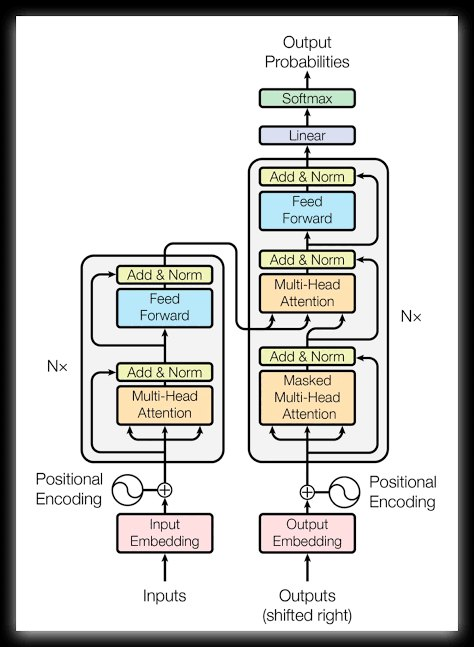
Multi-head
h heads in parallel, each with its own projections, then concatenated: one head may track spectral similarity, another spatial proximity.
Positional encoding
Attention is order-blind, so add position: PE(p,2i)=sin(p/100002i/d). In EO: pixel position, acquisition date, lat/lon.
Block
x+MHA(LN(x)), then x+FFN(LN(x)) — residuals again.
Cost
Attention is O(n2) in the number of tokens: the bottleneck for large images and long time series.
Attention explorer — who looks at whom?
Tokens in EO
- Words in reports and metadata
- Image patches (16×16 px) — ViT
- Dates in a pixel's time series
- Bands / sensors — spectral or multimodal tokens
Three families and the Vision Transformer
| Family | Objective | Examples |
|---|---|---|
| Encoder-only | masked-token prediction | BERT, ViT, Prithvi encoder |
| Decoder-only | next-token prediction | GPT, Llama, Qwen |
| Encoder–decoder | sequence-to-sequence | T5, original Transformer |
Beyond text
- CLIP: align images and captions (contrastive) ⇒ zero-shot classification by text prompt
- SAM: promptable segmentation (points, boxes) trained on 1 B masks
- Swin: windowed attention, hierarchical — CNN-like efficiency
Transformers meet Earth observation
Spatial
ViT / Swin backbones for scenes and segmentation; SatMAE and Scale-MAE pre-train with masking and ground-sample-distance awareness.
Temporal
Attention over acquisition dates handles clouds and irregular revisits: TSViT, Presto (pixel time series).
Spectral
Tokens per band group (SpectralGPT); wavelength-aware patch embeddings (DOFA) accept any sensor.
Vision–language
RemoteCLIP, GeoChat-style assistants: search imagery with text, caption scenes, answer questions.
Lab 6 · Attention from scratch, ViT and a temporal encoder
def attention(Q, K, V, mask=None): d = Q.size(-1) scores = Q @ K.transpose(-2, -1) / d ** 0.5 if mask is not None: scores = scores.masked_fill(mask == 0, float("-inf")) w = scores.softmax(dim=-1) # (B, n, n) return w @ V, w
import timm model = timm.create_model("vit_small_patch16_224.augreg_in21k", pretrained=True, num_classes=10) cfg = timm.data.resolve_data_config({}, model=model) train_tf = timm.data.create_transform(**cfg, is_training=True) opt = torch.optim.AdamW(model.parameters(), lr=5e-5, weight_decay=0.05) # same loop as Lab 2; warm-up + cosine schedule recommended
class PixelTSFormer(nn.Module): """Sentinel-2 pixel time series (T dates x C bands) -> class.""" def __init__(self, n_bands=10, d=64, n_cls=9, max_doy=366): super().__init__() self.inp = nn.Linear(n_bands, d) self.doy = nn.Embedding(max_doy + 1, d) # date encoding layer = nn.TransformerEncoderLayer( d, nhead=4, dim_feedforward=128, dropout=0.1, batch_first=True) self.enc = nn.TransformerEncoder(layer, num_layers=3) self.cls = nn.Linear(d, n_cls) def forward(self, x, doy, pad_mask=None): # x: (B, T, C) doy: (B, T) day-of-year of each image z = self.inp(x) + self.doy(doy) z = self.enc(z, src_key_padding_mask=pad_mask) return self.cls(z.mean(1)) # irregular dates & cloudy observations: just mask them out
Foundation models for Earth
- Self-supervised learning → foundation models → GeoFMs
- Three generations: RGB → multispectral → multimodal
- MAE, contrastive, DINO, JEPA — and the 11 features of an ideal Earth FM
- Labs 7–8 — Prithvi-EO-2.0 with TerraTorch, AlphaEarth embeddings
From machine learning to foundation models
| Paradigm | Data | Objective | EO example |
|---|---|---|---|
| Supervised | labelled | learn input → output mapping | land-cover classification |
| Unsupervised | no labels | discover hidden patterns | clustering, PCA |
| Reinforcement | agent + environment | maximise cumulative reward | irrigation optimisation |
| Self-supervised | unlabelled | learn representations from pretext tasks | MAE, JEPA, DINO |
What is a foundation model?
Definition
A model pre-trained on massive datasets with self-supervised objectives and adaptable to many downstream tasks.
- Massive EO archive — petabytes of unlabelled imagery
- Self-supervised pre-training — masking, contrast, distillation
- General geospatial representation — one encoder
- Fine-tuning → many downstream tasks

The GeoFM landscape: three generations
Generation 1 · single modality
SatMAE, Scale-MAE, RemoteCLIP
Input: RGB · Goal: visual representation learning
Generation 2 · multispectral
Prithvi, TerraFM
Input: multi-band EO imagery (time series) · Goal: better EO understanding
Generation 3 · multimodal
AnySat, Galileo, TerraMind, AlphaEarth
Input: S1, S2, Landsat, climate, DEM… · Goal: universal Earth representations
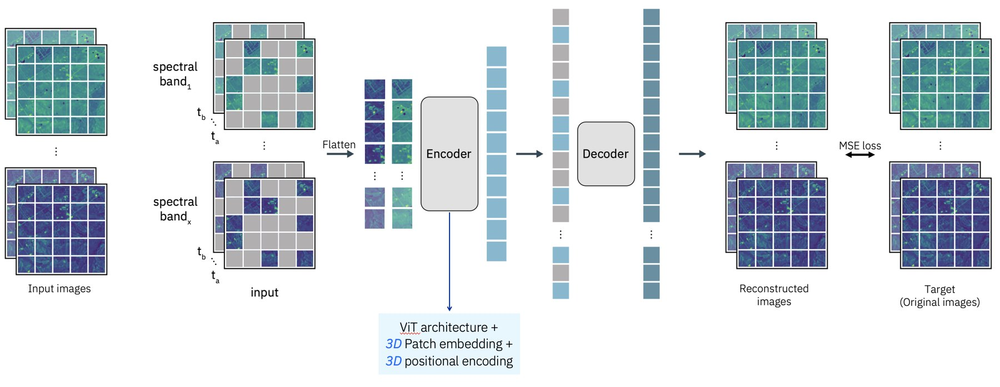
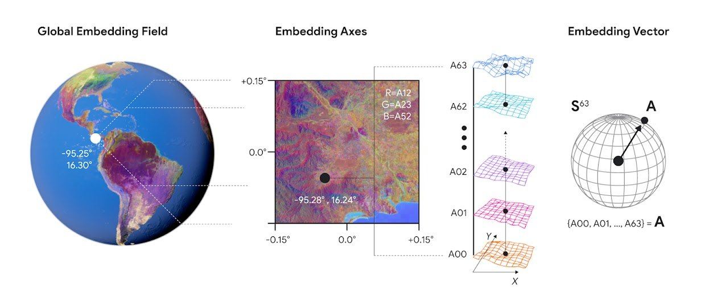
Key trend: single sensor → multi-sensor → multimodal → foundation Earth models
Four ways to learn without labels
Reconstruction · MAE, SatMAE
Mask ~75% of patches, reconstruct pixels → fine spatial detail.
L=∣M∣1∑p∈M∥x^p−xp∥2
Contrastive · CLIP, RemoteCLIP
Pull matching pairs together, push others apart → semantics.
L=−log∑jesim(zi,zj)/τesim(zi,zi+)/τ
Distillation · DINO, DINOv2
Student matches a momentum teacher on different crops/views → strong semantic features, no negatives.
Predictive · JEPA
Predict the latent representation of masked regions, not pixels → abstract “world-model” features.

MAE vs JEPA — pixels or meaning?
| Aspect | MAE | JEPA |
|---|---|---|
| Learns by | reconstruction | prediction |
| Target | pixels | representations |
| Objective | recover the missing image | predict latent context / future |
| Focus | low-level details | high-level semantics |
| Sensitivity to noise | high | lower |
| Physical-reasoning potential | moderate | high |
Why JEPA for EO?
Earth observation is full of clouds, noise, missing observations and multi-sensor inconsistencies. Spending capacity on reconstructing every noisy pixel is wasteful; predicting representations may be more meaningful.
context encoder sθ, predictor gϕ, EMA target encoder sˉ, stop-gradient sg.
Zhu et al. (2026): 11 features of an ideal Earth FM
gold = highly desirable (9–11)
Categories, evaluation and what comes after
| Category | Examples |
|---|---|
| EO FMs | SatMAE, Scale-MAE, CROMA, Presto, Prithvi, SpectralGPT, SkySense, DOFA |
| Weather & climate | FourCastNet, Pangu-Weather, GraphCast, ClimaX, NeuralGCM, FuXi, GenCast |
| Vision–language EO | RemoteCLIP, SkyScript, EarthGPT |
| Climate language | ClimateBert, ClimateGPT |
Evaluate fairly
- Diverse modalities, regions (oceans, polar, Global South), and periods
- Realistic conditions — don't keep only clear-sky scenes
- Standardised adaptation: linear probe, fine-tune, PEFT; few- and zero-shot
- Benchmarks: GEO-Bench, PhilEO, WeatherBench 2, ClimateBench
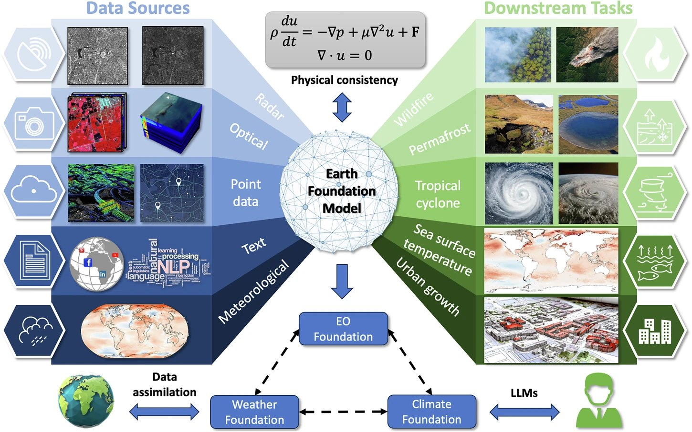
After foundation models
Energy-efficient adaptation · FM-enabled science (link EO with weather/climate) · machine unlearning · continual learning · adversarial defences · interpretability · RAG over geo-temporal data.
GeoFMs are not yet Earth-system models
1 · Physics ignorance
Most GeoFMs learn statistical correlations (higher NDVI ↔ higher biomass), not photosynthesis, water balance, energy balance or radiative transfer.
2 · EO treated as computer vision
Methods inherited from CV — image reconstruction, contrastive learning, object recognition. But EO is not photographs: it is time series, spatio-temporal, multi-resolution, multimodal, physical signal.
3 · Weak interpretability
Hard to explain predictions and hard to relate embeddings to physical processes.
4 · Poor transferability
Performance drops across climate zones, ecosystems and continents — exactly the shift Africa and the Global South face.
Research example: AtlasGeoFM — physics-aware GeoFM
Idea
Embed high-level models of balances (energy, water cycle) and time-series dynamics into representation learning.
Inputs
ERA5-Land meteorology + PM-ETo, with lat/lon and day-of-year context.
Training
Pre-train an encoder-only Transformer (MLM-like masking), then fine-tune: ETo nowcasting, gap-filling, anomaly detection. Benchmarked against semi-physical models and ML.
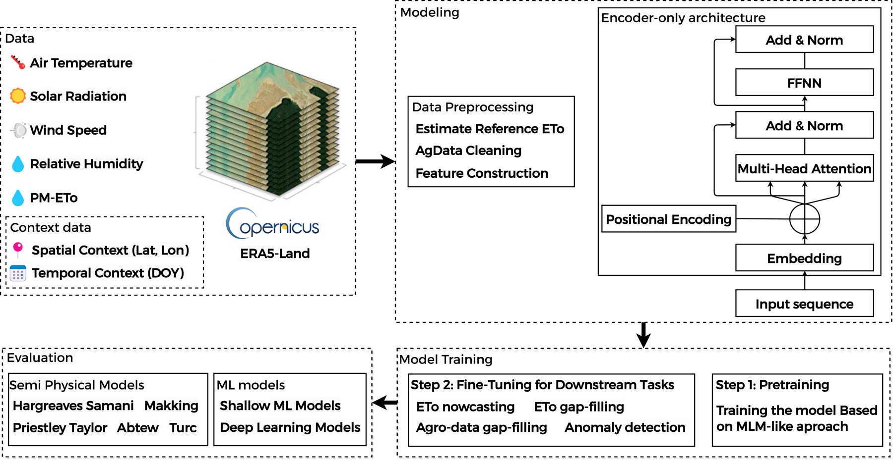
Four ways to use a foundation model
Embeddings
Freeze, extract vectors, train a light model (RF, k-NN, MLP). No GPU needed. e.g. AlphaEarth: 64-D, unit-length, 10 m, annual.
Linear probe
Freeze the encoder, train one linear layer — the standard test of representation quality.
PEFT / LoRA
Train small adapters, keep 99% of weights frozen: W=W0+BA, rank r≪d.
Full fine-tune
Encoder + decoder (U-Net/UPerNet) end-to-end. Best accuracy with enough labels and GPU.
Lab 7 · Fine-tune Prithvi-EO-2.0 with TerraTorch
import lightning.pytorch as pl from terratorch.datamodules import GenericNonGeoSegmentationDataModule from terratorch.tasks import SemanticSegmentationTask BANDS = ["BLUE", "GREEN", "RED", "NIR_NARROW", "SWIR_1", "SWIR_2"] dm = GenericNonGeoSegmentationDataModule( batch_size=4, num_workers=2, num_classes=2, train_data_root="burn_scars/training", val_data_root="burn_scars/validation", test_data_root="burn_scars/validation", img_grep="*_merged.tif", label_grep="*.mask.tif", means=MEANS, stds=STDS, # computed in the notebook dataset_bands=BANDS, output_bands=BANDS, no_data_replace=0, no_label_replace=-1) model = SemanticSegmentationTask( model_factory="EncoderDecoderFactory", model_args=dict( backbone="prithvi_eo_v2_300", backbone_pretrained=True, backbone_bands=BANDS, backbone_num_frames=1, necks=[{"name": "SelectIndices", "indices": [5, 11, 17, 23]}, {"name": "ReshapeTokensToImage"}, {"name": "LearnedInterpolateToPyramidal"}], decoder="UNetDecoder", decoder_channels=[512, 256, 128, 64], head_dropout=0.1, num_classes=2), loss="dice", optimizer="AdamW", lr=1e-4, ignore_index=-1, freeze_backbone=False) trainer = pl.Trainer(max_epochs=10, accelerator="auto", precision="16-mixed", log_every_n_steps=5) trainer.fit(model, datamodule=dm) trainer.test(model, datamodule=dm)
What happens
- ViT-L encoder pre-trained with a spatio-temporal MAE on HLS
- Neck picks 4 intermediate layers and reshapes tokens into a feature pyramid
- UNet decoder + head produce the burn-scar mask
Try
freeze_backbone=True(linear-probe-like)prithvi_eo_v2_300_tl+ time/location metadata- Swap the dataset for Sen1Floods11 or your own Moroccan chips
Lab 8 · AlphaEarth embeddings — no GPU needed
import ee ee.Authenticate(); ee.Initialize(project="YOUR-GCP-PROJECT") aoi = ee.Geometry.Rectangle([-7.75, 33.45, -7.45, 33.65]) # Casablanca emb = (ee.ImageCollection("GOOGLE/SATELLITE_EMBEDDING/V1/ANNUAL") .filterDate("2024-01-01", "2025-01-01") .filterBounds(aoi).mosaic().clip(aoi)) bands = emb.bandNames() # A00 ... A63 # reference: mean embedding at a few example locations pts_ref = [[-7.552, 33.563], [-7.523, 33.571]] refs = ee.FeatureCollection( [ee.Feature(ee.Geometry.Point(p)) for p in pts_ref]) ref = emb.reduceRegion(ee.Reducer.mean(), refs.geometry(), 10) ref_img = ee.Image.constant(ref.values(bands)).rename(bands) # vectors are unit-length: dot product = cosine similarity sim = emb.multiply(ref_img).reduce(ee.Reducer.sum()).rename("sim")
pts = ee.FeatureCollection("projects/YOUR/assets/labels") # 'class' train = emb.sampleRegions(pts, properties=["class"], scale=10) clf = ee.Classifier.smileRandomForest(200).train( train, "class", bands) landcover = emb.classify(clf) # change: 1 - cos(emb_2018, emb_2024) highlights new construction
Why this is powerful
A year of multi-sensor observations is already compressed into 64 numbers per 10 m pixel. A few dozen labels + a random forest can produce a usable map in minutes.
Informal settlements × foundation models
- Why it matters: SDG 11.1 and Morocco's Villes sans bidonvilles
- What the literature shows (2024–2026)
- A three-tier FM pipeline — with code (Lab 9)
- Validation and responsible mapping
Why map informal settlements?
SDG 11.1.1
Proportion of urban population living in slums, informal settlements or inadequate housing. UN-Habitat defines a slum household by deprivations in water, sanitation, durable housing, sufficient living area, security of tenure.
Morocco figures: Villes sans bidonvilles programme (launched 2004), status reported to Parliament in April 2026 (end-Sept 2025 data).
What satellites can — and cannot — see
Can: morphology — density, irregular layout, small roofs, roofing material, narrow paths, lack of open space, growth over time.
Cannot: tenure security, income, services inside homes. EO maps a physical proxy, to be combined with census and field data.
Why it is a hard ML problem
Morphology
Tiny, dense, irregular roofs (corrugated metal, concrete) — need sub-metre to ~3 m resolution; at 10 m they become a texture.
Heterogeneity
A Casablanca bidonville, a douar on the urban edge, a Rio favela and Nairobi's Kibera look different: models trained in one city fail in another.
Labels
Few, expensive, ambiguous boundaries; strong class imbalance (often < 5% of urban pixels); outdated reference maps.
⇒ What we need
Label-efficient learning (few-shot, semi-supervised), transfer across cities, multi-scale inputs — exactly the promises of foundation models.
Data at hand
VHR imagery (Pléiades, WorldView, aerial orthophotos), Sentinel-1/2, AlphaEarth embeddings, building footprints (Google Open Buildings, Microsoft), OpenStreetMap, census.
What the literature shows (2024–2026)
| Study | Approach | Take-away for us |
|---|---|---|
| UV-SAM (AAAI 2024) | Small segmentation model generates mask/box prompts → SAM refines urban-village boundaries | Generalist FM + specialist prompts = precise boundaries |
| Rio favelas (2025) | Tile classification with RS-specific FM (CROMA) vs generic models (e.g. DINOv2) | Satellite-specific pre-training beat generic models |
| GRAM (2025) | Mixture-of-experts + test-time adaptation; million-scale VHR data from 12 cities, 4 continents; tested in 3 African cities | Adapt to a new city without its labels |
| SLUM-i (2026) | Semi-supervised learning (Lahore, Karachi, Mumbai); DINOv2-based variant | With 10% of source labels: 0.461 mIoU on unseen cities, beating fully-supervised zero-shot |
| GFM benchmark (2025) | Clay, Prithvi-2.0, DOFA vs U-Nets for flood mapping | Few-shot: Clay 0.64 mIoU from 5 images (Prithvi 0.24) — FM choice matters |
A three-tier pipeline for Casablanca–Rabat–Marrakech
Tier A · screen at 10 m
AlphaEarth embeddings (+ building density from Open Buildings) → random forest with a few hundred labelled points → probability map per year.
Cheap, national scale, yearly change.
Tier B · classify VHR tiles
Frozen DINOv2 / CROMA / Clay embeddings of 0.5–3 m tiles (≈100 m) → logistic regression; few-shot, active learning on uncertain tiles.
Runs on CPU once features are cached.
Tier C · delineate
LoRA-fine-tuned encoder + U-Net decoder for pixel masks; SAM refines boundaries using Tier-B boxes as prompts.
GPU; only inside Tier-A/B candidates.
Lab 9a · Tier A — embeddings + random forest
cities = ee.FeatureCollection("projects/YOUR/assets/ma_cities") labels = ee.FeatureCollection("projects/YOUR/assets/is_points") # property "is_inf": 1 = informal, 0 = formal / other urban def embedding(year): return (ee.ImageCollection("GOOGLE/SATELLITE_EMBEDDING/V1/ANNUAL") .filterDate(f"{year}-01-01", f"{year + 1}-01-01").mosaic()) def bld_presence(year): # Open Buildings 2.5D temporal (2016-2023) ob = (ee.ImageCollection("GOOGLE/Research/open-buildings-temporal/v1") .filterDate(f"{year}-01-01", f"{year + 1}-01-01").mosaic()) return (ob.select("building_presence") .reduceResolution(ee.Reducer.mean(), maxPixels=1024) .reproject(crs=embedding(year).projection().atScale(10)) .rename("bld")) X = embedding(2023).addBands(bld_presence(2023)) train = X.sampleRegions(labels, properties=["is_inf", "city"], scale=10, geometries=True)
for test_city in ["Casablanca", "Sale", "Marrakech"]: tr = train.filter(ee.Filter.neq("city", test_city)) te = train.filter(ee.Filter.eq("city", test_city)) rf = (ee.Classifier.smileRandomForest(300) .setOutputMode("PROBABILITY") .train(tr, "is_inf", X.bandNames())) scored = te.classify(rf, "p") # threshold p > 0.5 -> confusion matrix / F1 in the notebook prob = X.classify(rf.setOutputMode("PROBABILITY"))
Outputs
- Probability map per year (2017→2024)
- F1 per held-out city
- Change = new high-probability pixels at the urban fringe
Lab 9b · Tiers B & C — frozen FM features, LoRA, SAM
import torch from transformers import AutoImageProcessor, AutoModel from sklearn.linear_model import LogisticRegression proc = AutoImageProcessor.from_pretrained("facebook/dinov2-base") enc = AutoModel.from_pretrained("facebook/dinov2-base").eval() @torch.no_grad() def embed(tiles): # list of RGB VHR tiles out = enc(**proc(images=tiles, return_tensors="pt")) h = out.last_hidden_state # (B, 1 + patches, 768) return torch.cat([h[:, 0], h[:, 1:].mean(1)], 1).numpy() Z_tr, Z_te = embed(train_tiles), embed(test_tiles) clf = LogisticRegression(max_iter=3000, class_weight="balanced") clf.fit(Z_tr, y_tr) p_te = clf.predict_proba(Z_te)[:, 1] # informal-settlement score
from peft import LoraConfig, get_peft_model from transformers import SamModel, SamProcessor lora = LoraConfig(r=8, lora_alpha=16, lora_dropout=0.1, target_modules=["query", "value"]) backbone = get_peft_model(AutoModel.from_pretrained( "facebook/dinov2-base"), lora) backbone.print_trainable_parameters() # ~0.3% trainable seg = SegModel(backbone, n_classes=2) # tokens -> U-Net-style head # refine a positive tile's mask with SAM, prompted by a box sam = SamModel.from_pretrained("facebook/sam-vit-base") sp = SamProcessor.from_pretrained("facebook/sam-vit-base") inp = sp(tile, input_boxes=[[box]], return_tensors="pt") with torch.no_grad(): masks = sp.image_processor.post_process_masks( sam(**inp).pred_masks, inp["original_sizes"], inp["reshaped_input_sizes"])
Validate like a scientist, publish like a citizen
Validation
- Leave-one-city-out and leave-one-year-out splits
- Pixel F1/IoU and tile-level precision/recall
- Area estimates with confidence intervals from a stratified sample (Olofsson et al., 2014), not pixel counting
- Calibrated probabilities + uncertainty map; flag out-of-distribution tiles
- Field and local-expert checks of a random sample
Responsible use
- Maps can stigmatise or be used to justify evictions — engage municipalities and residents
- Prefer aggregated outputs (grid, district) for public release
- Document the definition: “morphological informality” ≠ UN-Habitat slum household
- Respect VHR licences and privacy; keep a human in the loop
- Report where the model fails (city, typology)
From LLMs to agentic AI
- How LLMs are trained: next token, scale, alignment
- Prompting and retrieval-augmented generation (RAG)
- Agents: reason → act → observe; LangGraph
- Labs 10–11 — EO document RAG and a Sentinel-2 agent
How an LLM is made — three stages
Pre-training
Decoder-only Transformer predicts the next token on trillions of tokens:
L=−t∑logpθ(xt∣x<t)Scaling laws: loss falls predictably with parameters, data, compute (Chinchilla: ≈ 20 tokens per parameter).
Instruction tuning
Supervised fine-tuning on (instruction, answer) pairs turns a text-completer into an assistant. PEFT/LoRA makes this affordable for domain models (e.g. climate, EO).
Alignment & reasoning
RLHF / DPO learn from human preferences — Turing's rewards and punishments, 75 years later. RL on verifiable tasks yields “reasoning” models (o1, DeepSeek-R1).
Timeline
GPT-1 (2018) → GPT-3 (2020, 175 B) → ChatGPT (2022) → open-weight families (Llama, Mistral, Qwen, DeepSeek) and multimodal models that read images and maps.
Limits that matter for science
Hallucination, stale knowledge, no access to your data, weak arithmetic on rasters — which is why we add retrieval and tools.
Talking to an LLM: tokens, prompts, embeddings
Tokens
Text is split into sub-word tokens (“evapo|transp|iration”). Context windows, cost and speed are counted in tokens. Arabic and French often need more tokens than English.
Prompt patterns
- Role + task + constraints + format
- Few-shot examples
- Step-by-step reasoning
- Ask for citations / “say if unknown”
Embeddings
A text (or image, or pixel!) becomes a vector; similar meaning ⇒ nearby vectors. Search = nearest neighbours by cosine similarity — the engine of RAG, and the same idea as AlphaEarth.
SYSTEM = """You are an Earth-observation analyst. Use ONLY the provided context and tool outputs. If the answer is not there, say so. Return: (1) a short answer, (2) the evidence with [source, page], (3) caveats (sensor, resolution, date, cloud cover).""" USER = "Which Sentinel-2 bands are at 10 m and which index detects built-up areas?"
RAG — give the model a library card
Knowledge lives in the index, not the weights: update documents, no retraining.
EO use cases
- Q&A over mission handbooks, ATBDs, product specs
- Search a lab's past reports and theses
- Policy docs + maps: “what does the regional plan say about this zone?”
- Retrieve similar image chips via EO embeddings (multimodal RAG)
Lab 10 · A cited RAG assistant for EO documents
from langchain_community.document_loaders import PyPDFLoader from langchain_text_splitters import RecursiveCharacterTextSplitter from langchain_huggingface import HuggingFaceEmbeddings from langchain_community.vectorstores import FAISS from langchain.chat_models import init_chat_model docs = [] for f in ["S2_user_handbook.pdf", "zhu2026_earth_fm.pdf"]: docs += PyPDFLoader(f).load() # one doc per page chunks = RecursiveCharacterTextSplitter( chunk_size=1000, chunk_overlap=150).split_documents(docs) emb = HuggingFaceEmbeddings(model_name="BAAI/bge-small-en-v1.5") db = FAISS.from_documents(chunks, emb) retriever = db.as_retriever(search_kwargs={"k": 4}) llm = init_chat_model("ollama:qwen2.5:7b") # or "openai:..." etc. def ask(q): ctx = retriever.invoke(q) context = "\n\n".join( f"[{d.metadata['source']} p.{d.metadata.get('page', 0) + 1}] " f"{d.page_content}" for d in ctx) msg = [("system", SYSTEM), ("user", f"Context:\n{context}\n\nQ: {q}")] return llm.invoke(msg).content print(ask("What are the 11 features of an ideal Earth foundation model?"))
Exercises
- Ask a question whose answer is not in the PDFs — does it refuse?
- Change
kand chunk size; inspect retrieved chunks - Add French/Arabic documents; try a multilingual embedder (e.g.
BAAI/bge-m3)
Agents: LLMs that reason, act and observe
- Tool calling: the model emits a structured call (
search_sentinel2(bbox, dates)); your code executes it. - Memory: conversation state + long-term stores; planning: decompose “map flood extent after the storm” into steps.
- Multi-agent: a supervisor routes to specialists (data, analysis, writing) — HuggingGPT orchestrated whole model zoos.
- MCP (Model Context Protocol, 2024): an open standard to plug tools and data sources into any agent.
- EO copilots: GeoLLM-Engine benchmarks geospatial agents; Zhu et al. list “AI assistants” among the ideal Earth-FM features.
LangGraph: agents as state machines
| Concept | What it is |
|---|---|
| State | typed dict shared by all nodes (e.g. messages, aoi, results), with reducers to merge updates |
| Node | a Python function: LLM call, tool executor, validator |
| Edge | fixed transition A → B |
| Conditional edge | router function picks the next node (tools or END) |
| Checkpointer | persists state per thread: memory, resume, time-travel |
| Interrupt | pause for human approval before a costly step |
Lab 11 · A Sentinel-2 agent in LangGraph
from langchain_core.tools import tool import pystac_client, planetary_computer, odc.stac, numpy as np STAC = "https://planetarycomputer.microsoft.com/api/stac/v1" cat = pystac_client.Client.open( STAC, modifier=planetary_computer.sign_inplace) @tool def search_sentinel2(bbox: list[float], start: str, end: str, max_cloud: int = 20) -> str: """List Sentinel-2 L2A scenes over bbox [W,S,E,N] between start and end (YYYY-MM-DD) with cloud cover below max_cloud %.""" items = cat.search( collections=["sentinel-2-l2a"], bbox=bbox, datetime=f"{start}/{end}", query={"eo:cloud_cover": {"lt": max_cloud}}).item_collection() return "\n".join( f"{i.id} {i.datetime:%Y-%m-%d} " f"cloud={i.properties['eo:cloud_cover']:.0f}%" for i in items[:10]) @tool def mean_ndvi(item_id: str, bbox: list[float]) -> float: """Mean NDVI of one Sentinel-2 L2A scene inside bbox [W,S,E,N].""" item = cat.get_collection("sentinel-2-l2a").get_item(item_id) ds = odc.stac.load([item], bands=["B04", "B08", "SCL"], bbox=bbox, resolution=20, crs="EPSG:32629") ok = ~ds.SCL.isin([3, 8, 9, 10]) # drop cloud & shadow red, nir = ds.B04.where(ok), ds.B08.where(ok) return float(((nir - red) / (nir + red)).mean())
from langgraph.graph import StateGraph, MessagesState, START from langgraph.prebuilt import ToolNode, tools_condition from langgraph.checkpoint.memory import InMemorySaver from langchain.chat_models import init_chat_model tools = [geocode, search_sentinel2, mean_ndvi] llm = init_chat_model("openai:gpt-4o-mini").bind_tools(tools) def agent(state: MessagesState): return {"messages": [llm.invoke(state["messages"])]} g = StateGraph(MessagesState) g.add_node("agent", agent) g.add_node("tools", ToolNode(tools)) g.add_edge(START, "agent") g.add_conditional_edges("agent", tools_condition) # tools | END g.add_edge("tools", "agent") app = g.compile(checkpointer=InMemorySaver()) q = ("Compare mean NDVI over the Haouz plain near Marrakech in " "mid-April 2024 vs mid-April 2025 using clear scenes.") out = app.invoke({"messages": [("user", q)]}, {"configurable": {"thread_id": "haouz"}}) print(out["messages"][-1].content)
Cheat-sheet: which model for which EO problem?
| Your data / question | Start with | Upgrade to | Lab |
|---|---|---|---|
| Pixel spectra, tabular features | Random forest · MLP | FM embeddings + MLP | 1, 8 |
| Image patches → one label | Pre-trained ResNet | ViT / GeoFM, linear probe or LoRA | 2, 6 |
| Pixel-wise maps | U-Net (ResNet encoder) | Prithvi / Clay + UNet/UPerNet decoder; SAM refinement | 3, 7, 9 |
| Time series (weather, NDVI) | LSTM / GRU | Temporal Transformer; physics-aware FM | 4, 6 |
| Translate / fill images | pix2pix (cGAN) | Diffusion models | 5 |
| Few labels, many places | AlphaEarth embeddings + RF | Few-shot FM, semi-supervised, test-time adaptation | 8, 9 |
| Documents, reports, specs | RAG | Multimodal RAG (text + image embeddings) | 10 |
| Multi-step workflows | Tool-calling agent | LangGraph multi-agent + human-in-the-loop | 11 |
Notebooks & resources
| # | Notebook | Model |
|---|---|---|
| 1 | lab01_perceptron_mlp_sentinel2 | Perceptron, MLP |
| 2 | lab02_cnn_eurosat_resnet | CNN transfer learning |
| 3 | lab03_unet_landcoverai | U-Net |
| 4 | lab04_lstm_eto_forecasting | LSTM |
| 5 | lab05_pix2pix_sar_to_optical | cGAN |
| 6 | lab06_vit_eurosat | Attention, ViT, temporal Transformer |
| 7 | lab07_prithvi_terratorch | GeoFM fine-tuning |
| 8 | lab08_alphaearth_embeddings | Embedding fields |
| 9 | lab09_informal_settlements_fm | FM case study |
| 10 | lab10_rag_eo_documents | RAG |
| 11 | lab11_langgraph_eo_agent | Agent |
Course books & code
- De Marchi & Mitchell — Hands-On Neural Networks · github.com/PacktPublishing/hands-on-neural-networks
- Rothman — Transformers for NLP and Computer Vision, 3rd ed. · github.com/Denis2054/Transformers-for-NLP-and-Computer-Vision-3rd-Edition
- Rodriguez — Generative AI Foundations in Python · github.com/PacktPublishing/Generative-AI-Foundations-in-Python
- Danka — Mathematics of Machine Learning (linear algebra, calculus, probability)
Tools
PyTorch · TorchGeo · TerraTorch · segmentation-models-pytorch · timm · Hugging Face · Earth Engine · Planetary Computer · LangChain · LangGraph
Key references
- Turing, A. M. (1950). Computing machinery and intelligence. Mind 59:433–460.
- McCulloch, W. & Pitts, W. (1943). A logical calculus of the ideas immanent in nervous activity. Bull. Math. Biophys. 5:115–133.
- Rosenblatt, F. (1958). The perceptron. Psychological Review 65:386–408.
- Rumelhart, D., Hinton, G. & Williams, R. (1986). Learning representations by back-propagating errors. Nature 323:533–536.
- LeCun, Y., Bengio, Y. & Hinton, G. (2015). Deep learning. Nature 521:436–444.
- Hochreiter, S. & Schmidhuber, J. (1997). Long short-term memory. Neural Computation 9:1735–1780.
- Goodfellow, I. et al. (2014). Generative adversarial nets. NeurIPS.
- He, K. et al. (2016). Deep residual learning. CVPR · Ronneberger, O. et al. (2015). U-Net. MICCAI.
- Vaswani, A. et al. (2017). Attention is all you need. NeurIPS.
- Dosovitskiy, A. et al. (2021). An image is worth 16×16 words (ViT). ICLR.
- He, K. et al. (2022). Masked autoencoders are scalable vision learners. CVPR.
- Zhu, X. X. et al. (2026). On the foundations of Earth foundation models. Commun. Earth Environ. doi:10.1038/s43247-025-03127-x
- Jakubik, J. et al. (2023). Foundation models for generalist geospatial AI (Prithvi). arXiv:2310.18660.
- Szwarcman, D. et al. (2024). Prithvi-EO-2.0. arXiv:2412.02732.
- Xiong, Z. et al. (2024). Neural plasticity-inspired foundation model for EO (DOFA). arXiv:2403.15356.
- Brown, C. F. et al. (2025). AlphaEarth Foundations. arXiv:2507.22291.
- LeCun, Y. (2022). A path towards autonomous machine intelligence. OpenReview.
- Zhang, X. et al. (2024). UV-SAM: adapting SAM for urban village identification. AAAI.
- Mukhtar, M. T. et al. (2026). SLUM-i. arXiv:2602.04525 · GRAM (2025) arXiv:2511.10300.
- Kuffer, M., Pfeffer, K. & Sliuzas, R. (2016). Slums from space. Remote Sensing 8:455.
- Lewis, P. et al. (2020). Retrieval-augmented generation. NeurIPS · Yao, S. et al. (2023). ReAct. ICLR.
- Hu, E. et al. (2022). LoRA. ICLR · Ouyang, L. et al. (2022). InstructGPT. NeurIPS.